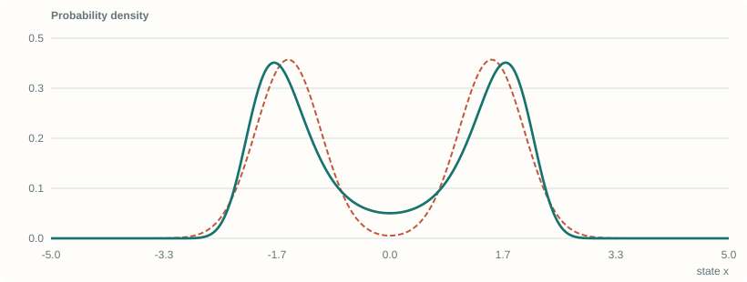
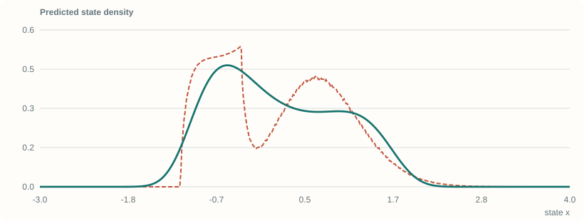
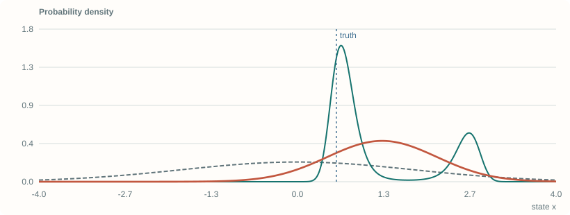
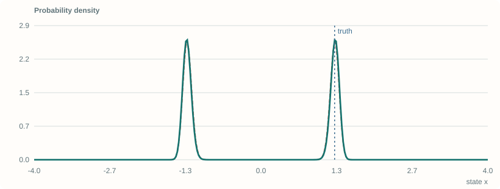

Beyond the Gaussian Belief
Max Entropy Moment Kalman Filter: a paper walkthrough with original worked examples and four numerical laboratories.
Source: Teng, Zhang, Jin, Jasour, Vasudevan, Ghaffari, and Carlone. arXiv:2506.00838v1, June 1, 2025. These demos are teaching implementations, not reproductions of the paper’s robotics experiments.
1 / 28
Beyond the Gaussian belief.
Max Entropy Moment Kalman Filter for Polynomial Systems with Arbitrary Noise
Propagate moments.
Reconstruct a distribution.
Update its polynomial energy.
A paper walkthrough with four working numerical laboratories.
Moment constraints → maximum entropy
Prediction → likelihood → posterior
Four browser-local numerical labs

Explanation and assumptions
This is a teaching companion, not the authors’ implementation or a reproduction of their robotics experiments. Read the first half to understand the probability representation, then follow one prediction and one update before trying the complete scalar filter. Green curves are the richer representation; coral curves are a target or reference, except in the sensor lab where coral denotes a Gaussian sensor approximation. Every lab identifies its finite integration interval and displays numerical diagnostics. Source: Sangli Teng, Harry Zhang, David Jin, Ashkan Jasour, Ram Vasudevan, Maani Ghaffari, and Luca Carlone, arXiv:2506.00838v1, June 1, 2025.
Teng et al. · arXiv:2506.00838v1 · 2025 · Open this Bento slide
2 / 28
The mean can sit where almost nothing is likely.
A simple counterexample: two narrow, equally weighted modes.
A moment-matched Gaussian puts its mode at zero. The mixture may have a deep valley there.
The difference is \(2a^4\). The first two moments do not encode the missing shape.
Explanation and assumptions
Derive the fourth moment by writing each mixture component as plus or minus a plus s times a standard normal variable. Odd terms vanish by symmetry. A centered Gaussian with the same variance has fourth moment three times the variance squared, giving a difference of 2a^4. This original example explains why more moments can distinguish distributions that a mean-and-covariance description cannot. It does not assert that every fourth-order maximum-entropy fit recovers an arbitrary mixture exactly.
3 / 28
Three operations, three different questions.
Keep representation, inference, and point estimation separate.
Use an exponential of a polynomial to encode a moment-constrained maximum-entropy belief.
Question: which density matches these moments?
Predict moments through polynomial dynamics. Incorporate measurements by adding likelihood energy.
Question: what is the posterior distribution?
Optimize the posterior polynomial energy. Moment-SDP relaxations can provide bounds and certificates.
Question: where is a posterior mode?
Explanation and assumptions
The paper’s MED coefficients, predicted moments, and MAP point are distinct objects. Optimizing the coefficients is a convex parameter-estimation problem. Searching for a mode is generally a nonconvex polynomial problem, handled through convex relaxations. A correct implementation must not confuse the moment sequence representing a probability density with the relaxation moments used to optimize its energy.
4 / 28
Fix the state, support, and noise model first.
The teaching derivations use additive, state-independent noise.
The functions \(f\) and \(g\) are polynomial. Noise is independent of the current state and fresh across time.
Here \(\phi\) excludes the constant term. \(Z\) carries normalization. The support and base measure are part of the model.
Explanation and assumptions
For several variables, alpha is a multi-index and x to alpha is the product of coordinate powers. The paper permits a more general polynomial residual h(y,x)=v and polynomial equality-constrained states. This deck begins with additive measurement noise because its likelihood has an unambiguous unit Jacobian. Every expectation requires that the relevant moment exists. In the labs the integration measure is approximated with trapezoidal weights, not with an unweighted array of density heights.
Notation · paper §4; normalized convention · Open this Bento slide
5 / 28
A finite moment vector is not a unique distribution.
Maximum entropy chooses a representative; it does not invent extra observations.
Many densities can satisfy the same finite list. Feasibility is a separate question from fitting.
Choose the least additional structure allowed by the constraints and the chosen reference measure.
More moments reduce the feasible family, but increase numerical burden.
Explanation and assumptions
Entropy is not invariant to an arbitrary change of coordinates unless the reference measure is transformed consistently. Consequently the support and coordinates cannot be left implicit. On a finite grid, an interior feasible moment target has a well-behaved maximum-entropy solution. On unbounded continuous domains, existence, integrability, and limiting arguments need additional conditions. The paper’s asymptotic claim concerns moment-determinate distributions, not every conceivable heavy-tailed law.
6 / 28
The constraints become a polynomial energy.
A Lagrange multiplier for each moment gives an exponential family.
For monomial features, the negative log density is a polynomial plus a constant.
On \(\mathbb R\), a normalizable quadratic energy is Gaussian. A quartic energy can have two wells.
Explanation and assumptions
Vary the entropy Lagrangian with respect to p and solve the pointwise stationarity equation. Absorb the constant multiplier into the partition function. On the real line, a positive quadratic coefficient is needed for the quadratic family to integrate. A positive quartic leading term gives integrable tails even when the quadratic term is negative. On a bounded interval, the corresponding order-two family is generally a truncated exponential-quadratic density, not literally the unrestricted Gaussian.
7 / 28
A convex solve makes the moments agree.
Eliminate the constant multiplier and optimize the log partition function.
At the optimum, the gradient is zero: requested and reconstructed moments agree.
The Hessian is a covariance matrix. Redundant features may make it singular.
The paper keeps the constant coefficient; its equivalent dual has an unnormalized moment-matrix Hessian.
Explanation and assumptions
The paper writes an integral of the unnormalized exponential plus the multiplier-moment inner product. Minimizing over its constant coefficient yields this normalized log-partition dual, up to an additive constant. Differentiating log Z once gives minus the feature expectation, and differentiating again yields feature covariance. The browser solver uses theta=-lambda and scaled Legendre features, so its gradient is E[phi]-m. This is the same convex problem in another polynomial basis, not a different belief family.
Derived normalized dual · paper Eqs. (4)–(5) · Open this Bento slide
8 / 28
Convex in coefficients does not mean unimodal in state.
The optimizer variable and the random variable are different.
For \(a>0\), the density has modes at \(x=\pm a\). Its negative log density is not a convex function of \(x\).
Fit the distribution: vary the coefficient vector while matching moments.
Find a mode: hold coefficients fixed and vary the state.
The first problem is convex. The second can have several globally optimal answers.
Explanation and assumptions
Differentiating E gives 4x(x^2-a^2), so the stationary points are zero and plus/minus a. At zero the second derivative is negative when a is positive; at plus/minus a it is positive. Thus the state energy has two minima while the maximum-entropy coefficient-fitting dual remains convex. No contradiction is involved. This distinction prevents the misleading claim that the entire posterior is log-concave merely because its coefficients were obtained by a convex solver.
9 / 28
How much shape is hiding in higher moments?
Reconstruct a two-component mixture from only its moment constraints.
Move the modes apart. Compare \(r=2,4,6,8\). Change the mixture weight to reveal asymmetry.
Moment residual: maximum mismatch in scaled Legendre features.
KL divergence: shape discrepancy on this grid, not a filtering error guarantee.
Numerics: 401 points on [−5, 5], trapezoidal weights, damped Newton and line search.
Explanation and assumptions
The target mixture is renormalized on the lab interval before its moments are measured. The solver fits a genuine finite-quadrature maximum-entropy model by optimizing log-sum-exp, not a hand-designed curve. It uses all polynomial features through the selected order, including odd features. Increasing the order enlarges the exponential family and, for an accurately solved feasible problem with the same target and support, cannot increase the optimal forward KL divergence. This does not imply monotonic point-estimation accuracy.
Original lab · MED principle in paper §5 · Open this Bento slide
10 / 28
Fit the same density with more information.
The green curve is optimized in your browser—not selected from a gallery.
Start at r = 2. Increase to 4, then 8. Move the separation and weight sliders. Does a small moment residual imply a small shape error?
Computed default snapshot
Use the controls in presentation mode. Print and study notes preserve this calculated view.
Open this interactive laboratory →
Explanation and assumptions
The default is a symmetric mixture with separation 1.5 and component standard deviation 0.48. Target and model are compared on a fixed quadrature grid. A low residual certifies only approximate satisfaction of the selected grid moments. It is not a statement about unmeasured moments, tails outside the interval, or global filtering error.
Original numerical example · finite-grid approximation · Open this Bento slide
11 / 28
Powers of a polynomial are still polynomials.
Prediction can be written as algebra on moments.
State–noise independence lets mixed expectations factor.
A quadratic transition may need state moments through \(2r\) to predict through \(r\).
Obtain those higher moments from the current fitted belief. Truncating them without a closure rule changes the algorithm.
Explanation and assumptions
The lifted relation is exact algebra when all required moments exist and are supplied accurately. Exact propagation relative to the current fitted belief is not the same as exact propagation of the unknown true posterior. Reconstruction introduces a finite-order approximation, and numerical integration may introduce another one. A finite vector of stored moments alone need not close under nonlinear dynamics; the fitted density supplies the higher moments requested by the next step.
Worked interpretation · paper §6.3, Eqs. (8)–(9) · Open this Bento slide
12 / 28
Work one nonlinear prediction all the way through.
Use a quadratic state transition and independent uniform process noise.
The noise has zero mean and variance \(0.4^2/3\).
Higher output moments use the same expansion. No linearization and no Monte Carlo are required.
Explanation and assumptions
Expand the square of aX+b(X^2-1)+W. Independence and E[W]=0 remove its cross terms. The fourth input moment already appears in the second output moment. The implementation generalizes the expansion by multiplying polynomial coefficient arrays and applying the binomial theorem for independent additive noise. It uses input moments through 2r even when b=0, where that bound is conservative. The coral reference separately evaluates the pushforward density using the uniform-noise kernel.
13 / 28
Propagate first. Reconstruct second.
Exact polynomial moment algebra; approximate finite-order density reconstruction.
Increase the quadratic coefficient b. Compare r = 2 with r = 6. Notice that matching moments does not make the entire pushforward exact.
Computed default snapshot
Use the controls in presentation mode. Print and study notes preserve this calculated view.

Open this interactive laboratory →
Explanation and assumptions
The input is a truncated, slightly asymmetric two-component mixture on [-2.5,2.5]. The uniform noise support and slider range keep the exact pushforward inside [-3,4]. The reference uses deterministic quadrature over the input state and the exact uniform kernel; its edges have small grid artifacts. The green fit uses independently propagated raw moments, transformed into the solver’s Legendre basis.
Original numerical example · finite-grid approximation · Open this Bento slide
14 / 28
Bayes multiplication becomes energy addition.
Once the measurement is fixed, its residual is a polynomial in the state.
Expand the composed polynomial in a common basis.
Pad missing degrees with zeros. Recompute the normalizer and the moments needed for the next prediction.
Explanation and assumptions
These formulas describe a posterior density, not just a MAP estimate. Multiplying exponentials adds their energies. Constants independent of x affect the normalizer but not the location of a mode. If the sensor energy has degree r_v and g has degree d, the resulting state energy may have degree r_v times d; this need not equal the prediction reconstruction order. The complete scalar lab has a quartic posterior likelihood even when prediction is reconstructed using only order two.
Worked derivation · paper §6.4, Eqs. (10)–(12) · Open this Bento slide
15 / 28
A residual density is not automatically a likelihood.
The simple substitution is safe for the additive model used in these demos.
For fixed x, the transformation from y to v has unit Jacobian.
This local formula needs an appropriate invertible transformation. An x-dependent Jacobian cannot be dropped.
Explanation and assumptions
This is a modeling qualification, not a claim that all residual equations in robotics are invalid. For equal-dimensional invertible changes of observation coordinates, the usual change-of-variables determinant is required. Noninvertible maps and dimension-changing constraints require an explicit observation measure and more care. In the paper’s planar localization rearrangement, multiplication by a proper rotation has determinant one. The additive sensor examples in this deck deliberately avoid this ambiguity.
Original modeling check · relates to paper Eq. (11) · Open this Bento slide
16 / 28
Let a sensor keep its two plausible explanations.
Compare a quartic-noise likelihood with its moment-matched Gaussian approximation.
One observation can favor both \(x\approx y_i-a\) and \(x\approx y_i+a\).
The green posterior is computed from this energy. The coral baseline replaces the sensor distribution—not the state likelihood—with a Gaussian.
Explanation and assumptions
The symbol s here sets the quartic energy scale; it is not the standard deviation of v. The lab calculates the sensor variance by quadrature before constructing the Gaussian baseline. Observations are a deliberately fixed sequence around alternating modes for a static state x=0.6; they are not claimed to be random draws from the sensor density. Both methods receive exactly the same observations and prior. A grid argmax is displayed only as an approximate mode, never as an SDP-certified estimate.
17 / 28
One reading, two explanations. More readings, less ambiguity.
Move through a fixed observation sequence and compare posterior shapes.
Begin with one observation. Add the second. Compare the posterior mean with the highest peak, then change the sensor mode separation.
Computed default snapshot
Use the controls in presentation mode. Print and study notes preserve this calculated view.

Open this interactive laboratory →
Explanation and assumptions
The normalizer is recomputed after each batch of observations. The gray curve is the original prior, green is the quartic sensor posterior, and coral is the Gaussian sensor approximation posterior. Blue marks the known synthetic truth. The same truth is not supplied to either inference calculation. The integration interval is [-4,4] with 501 points.
Original numerical example · finite-grid approximation · Open this Bento slide
18 / 28
The filter alternates two representations.
Moments are convenient for prediction; energy coefficients are convenient for correction.
Integrate the current belief for the moments required by the transition.
Apply polynomial moment algebra.
Fit a new maximum-entropy prediction at order r.
Compose the sensor energy with the observed residual.
Add it to the prior energy.
Normalize; retain the resulting belief for the next step.
Keep the full belief when ambiguity matters.
Compute a mean for squared-error loss, or extract a mode for MAP.
Label numerical approximations and any optimization certificate separately.
Explanation and assumptions
The update does not require a Kalman gain. The analogy with a Kalman filter is the recursive predict–correct structure, not a promise that nonlinear filtering is a finite closed-form recursion. The current exponential-polynomial density can be integrated to obtain more moments than were originally constrained at prediction. Those extra moments come from the chosen maximum-entropy representative, and therefore include a closure assumption.
Algorithmic reading · paper Algorithm 1 · Open this Bento slide
19 / 28
Can the filter preserve an unresolved sign?
A squared observation sees magnitude but does not directly reveal the sign of x.
\(w_k\sim\mathcal N(0,0.14^2)\), \(v_k\sim\mathcal N(0,0.23^2)\). The prior is centered and broad.
With u = 0, symmetry should remain. With u = 0.18, known motion can help distinguish signs.
Compare prediction orders 2, 4, and 6 on the same seeded sequence.
The coral reference performs direct grid Bayes prediction. It is numerical—not ground-truth continuous Bayes.
Explanation and assumptions
The synthetic trajectory begins at +1.2, but the estimator receives only the broad zero-mean prior. A seeded generator produces the process and measurement noise. With zero control and an even initial belief, every transition and likelihood preserves reflection symmetry, so no correct filter should claim to know the sign. A nonzero known control changes this identifiability. At every step the MEM path integrates its posterior moments, propagates through the affine transition, reconstructs a maximum-entropy prediction, then multiplies by the quartic likelihood induced by y-x^2.
Original end-to-end MEM-KF teaching model · Open this Bento slide
20 / 28
Follow a full predict–correct cycle.
Both algorithms see the same measurements; neither is given the truth.
Step forward with zero control. Change prediction order without changing the data. Then turn on known drift. Does an apparently precise mean conceal two peaks?
Computed default snapshot
Use the controls in presentation mode. Print and study notes preserve this calculated view.

Open this interactive laboratory →
Explanation and assumptions
This is a genuine scalar implementation of the predict–reconstruct–correct architecture, but not the authors’ SE(2) solver. The comparison uses 321 points on [-4,4]. It reports L1 discrepancy between quadrature masses, the last prediction’s moment-fit residual, and the largest raw mass truncation discrepancy in the grid reference. Order denotes prediction reconstruction order, not the degree of the post-measurement energy.
Original numerical example · finite-grid approximation · Open this Bento slide
21 / 28
A belief, a mean, and a mode answer different questions.
A single number cannot faithfully summarize every multimodal posterior.
The posterior mean minimizes expected squared error.
For a symmetric two-mode belief it is zero, even when zero has little density.
A MAP estimate can select one of several equal peaks. That selection does not remove the uncertainty.
Explanation and assumptions
Expand E[(x-a)^2 | y] into posterior variance plus (E[x|y]-a)^2 to obtain the mean’s squared-error optimality. MAP is tied to density relative to the chosen coordinates and measure. In the symmetric filter lab there may be equally plausible positive and negative modes; the grid argmax may return the first by indexing convention. That is not evidence for the negative sign. The paper’s point-extraction step specifically targets a posterior mode.
Decision-theoretic interpretation · paper §6.5 · Open this Bento slide
22 / 28
A convex relaxation is not automatically an exact MAP solve.
The polynomial energy can be nonconvex even though its SDP relaxation is convex.
A moment-SDP relaxation gives a lower bound on this minimum.
A feasible extracted state gives an upper bound. A small gap is meaningful evidence.
An appropriate rank/extraction condition can certify global optimality.
Without tightness, report the bound and gap rather than declaring an exact mode.
These browser labs use a grid argmax and do not solve an SDP.
Explanation and assumptions
The paper discusses a rank-one solution as a sufficient extraction certificate. More general moment hierarchies use flatness conditions to extract finite collections of minimizers; a problem with multiple global minima need not have a unique rank-one moment solution. A certificate concerns optimization of the represented posterior energy. It does not certify that a finite-order reconstructed posterior equals the true filtering distribution, nor that a MAP point is minimum-MSE.
Paper §6.5 and Appendix A · guarantee boundary · Open this Bento slide
23 / 28
The Gaussian case is a quadratic-energy calculation.
Linear dynamics + linear observations + Gaussian beliefs close at order two.
Adding these energies keeps the result quadratic.
This is the familiar Kalman correction in information form.
Explanation and assumptions
Expand both quadratic forms and collect the coefficients of x transpose x and x. Constants independent of x are absorbed into the normalizer. This derivation assumes positive-definite covariance matrices and Euclidean coordinates. The familiar exact Kalman closure relies on Gaussian initialization and Gaussian noise as well as linear models; a Gaussian approximation to genuinely non-Gaussian noise does not become exact just because the model is linear.
Original quadratic derivation · paper Remark 3 · Open this Bento slide
24 / 28
Unknown landmark identity creates a mixture.
Do not collapse a correspondence ambiguity before representing it.
Unknown landmark identity i produces a multimodal effective sensor variable.
Moment constraints describe the effective noise without committing to one landmark.
The rotation still obeys \(c^2+s^2=1\). A planar pose is not an unconstrained vector.
Explanation and assumptions
This slide connects the scalar multimodal sensor intuition to the paper’s SE(2) example. The paper uses equal landmark probabilities in its maximum-entropy association model and also evaluates a mismatched association frequency scenario. A moment representation does not magically infer arbitrary unknown association probabilities; the assumed probabilities and noise moments remain modeling inputs. The browser labs do not implement this constrained multidimensional localization experiment.
25 / 28
What the paper tests—and what the demos do not claim.
Separate reported experiments from this independent teaching implementation.
Increasing moment order recovers more of the shapes in the paper’s numerical examples.
Read: Figure 2 and Appendix H.
Higher-order sensor models preserve multiple modes. Small-sample point errors need not improve monotonically.
Read: Figure 3 and Table 1.
The paper compares MEM-KF with Gaussian-filter baselines and a particle filter in landmark-association experiments.
Read: §7.3 and Appendix H.3.
Explanation and assumptions
No performance numbers in these labs are presented as reproductions of the authors’ results. The model dimensions, sensor distributions, quadrature, optimizers, and synthetic sequences differ. The paper’s own small-sample discussion warns that multimodality can make a point estimate’s empirical error worse even when the represented distribution is richer. A useful reading question is whether the result concerns density approximation, MAP objective value, estimation error, or runtime: these are different axes.
Reported scope · paper §7, Table 1, Appendix H · Open this Bento slide
26 / 28
“Arbitrary noise” still has mathematical requirements.
Finite-order practical filtering is an approximation, not a universal exact Bayes filter.
Required moments must exist and be feasible.
Moment determinacy and existence of the relevant MED matter in asymptotic claims.
A Cauchy noise law has no finite variance.
Degree and dimension increase both coefficient count and integration cost.
Scaling, quadrature, and conditioning remain central.
Model error: incorrect dynamics, moments, or associations.
Representation error: finite-order MED closure.
Numerical error: integration, fitting, and optimization relaxation.
Explanation and assumptions
The word arbitrary signals departure from a Gaussian-only noise assumption, not the removal of existence and integrability conditions. Higher-order moments grow quickly and may be unstable when estimated from limited data. Increasing r can improve expressiveness while making estimation and numerical conditioning harder. Polynomial state constraints require a suitable measure and consistency relations among moments. Numerical quadrature replaces a difficult symbolic marginalization; it does not eliminate integration from the method.
Critical reading · paper §§5–6 and conclusion · Open this Bento slide
27 / 28
Know exactly what the browser is solving.
All four labs are deterministic, local, and inspectable.
Finite trapezoidal quadrature with explicit support.
Legendre-basis log-partition fitting, covariance Hessian, damped Newton, and line search.
Exact polynomial expansion relative to supplied moments; normalized likelihood updates; a grid-Bayes comparison.
Adaptive multidimensional integration, manifold integration, or the authors’ SE(2) experiment.
Semidefinite programming or a global MAP certificate.
The displayed residual uses scaled feature moments. A small residual alone says nothing about tail truncation.
Explanation and assumptions
The model source is model.mjs and the tests are test.mjs. The build generates a static SVG for each lab from exactly the same functions used by the interactive controls. This makes printed slides honest computed snapshots instead of decorative illustrations. The filter reference reports raw prediction mass loss on the finite interval; the other labs use fixed normalized intervals explicitly stated in their controls. Browser tests check the native Bento document, the four iframe integrations, keyboard navigation, plot changes, MathJax rendering, and narrow-screen laboratory layout.
Original implementation and test contract · Open this Bento slide
28 / 28
Read the source. Inspect the model. Keep the belief.
A paper companion with worked explanations, not an alternative statement of the paper.
Max Entropy Moment Kalman Filter for Polynomial Systems with Arbitrary Noise
Sangli Teng · Harry Zhang · David Jin · Ashkan Jasour · Ram Vasudevan · Maani Ghaffari · Luca Carlone
arXiv:2506.00838v1 · June 1, 2025
§5: maximum entropy
§6: filtering and MAP extraction
§7 + Appendix H: numerical experiments
Explanation and assumptions
Reference checked against arXiv version 1. The slides’ scalar examples, numerical code, and explanatory derivations are original teaching material built around the paper’s ideas. No author-provided code is embedded. The actual Bento runtime and site-shared live-slide adapter are retained from the existing Random Thoughts presentation format, with their original license notices.
Primary reference · arXiv:2506.00838v1 · Open this Bento slide